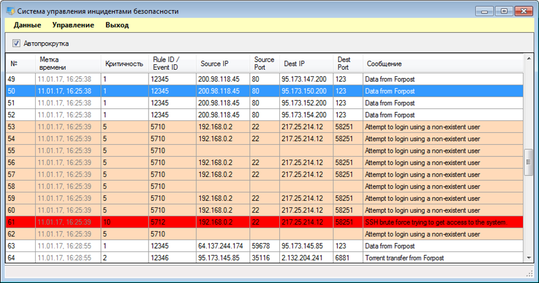

Система управления инцидентами безопасности (SIEM)
Предназначение системы — выявление сценариев атак в массиве зарегистрированных событий безопасности, осуществление регистрации, мониторинга и анализа инцидентов информационной безопасности.

Главное окно макета системы управления инцидентами безопасности
Основные функциональные возможности:
Подключение различных источников событий безопасности (разработаны коннекторы для базы данных MS SQL и протокола syslog).
Чтение базы выявления зависимостей между отдельными событиями безопасности в формате OSSEC.
Обработка потока поступающих событий безопасности должен в соответствии с загруженными правилами.
Обнаружение распределенных атак типа "отказ в обслуживании" (DDOS-атак).
Выявление инцидентов информационной безопасности.
Формирование оповещений для администратора безопасности.
Ближайшие планы — подготовка к сертификации по требованиям ФСТЭК России (руководящий документ "Защита от несанкционированного доступа к информации. Часть 1. Программное обеспечение средств защиты информации. Классификация по уровню контроля отсутствия недекларированных возможностей", 4 уровень).